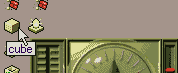
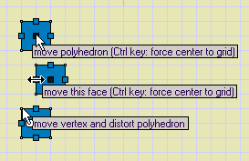
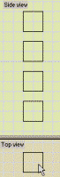
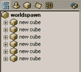
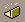
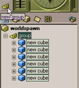

Using brushes (polyhedrons)
Updated 12 Sep 2008
- QuArK Information Base
- 2. Map editing
- 2.1. Tutorial - Creating a map
|
|
Using brushes (polyhedrons)
Updated 12 Sep 2008
|
Upper levels: - QuArK Information Base - 2. Map editing - 2.1. Tutorial - Creating a map |
|
2.1.2. Using brushes (polyhedrons) |
[ - - ] |
This is the second part of four, which guides you through the methods and functions of creating a map in QuArK's map-editor. You should have read the first part before going through this second part. Once you've completed this section, proceed to 'Using entities'. |
|
Index |
|
Creating brushes (polyhedrons) |
Decker - 12 Sep 2008 | [ Top ] |
|
 I presume you have deleted the default room completely, because we need a blank sheet in this section. A brush is like a brick. You use them to build floors, walls and ceilings with. Even the sky and water are build with brushes. The word brush is not really a good word, but it has become commonly known as; "the object with which to build levels with, for a Quake-engine game". QuArK also uses the word polyhedron or the shorter poly, to indicate a brush. You may even see the word cube, but it is still a brush/polyhedron. So to create a brush, click on the icon shown in the image. This will create a cube with a default size and default texture in your map. Your new brush will be shown as selected in the 2D-views, by showing it in a shade of blue and with movement handles. |
|
Moving and sizing brushes |
Decker - 12 Sep 2008 | [ Top ] |
|
 You can move a brush, by moving your mouse to the black-handle in the center (polyhedron handle), press and hold the mouse button, then move the brush to a new position, and release the mouse button. To size the brush, use the small blue-handles at the edges (face handles). To distort a corner, use the vertex. Notice that QuArK does not distort just a single corner, but an edge. This is due to the internal storing of faces, and in many cases ensure that your brushes are kept convex, which they must be to be used in a Quake-engine game! True vertex-manipulation does not exists in the map-editor. Try to create some more brushes, and move them around, maybe even size them. You can unselect the brush(es) by clicking in an empty space of the 2D-views, and selecting them again by clicking within the brush. Notice that the 'Tree-view (hierarchy-view)' will show you your new cubes, where you also can select them. Try also to delete and undo/redo your newly created brushes. |
|
Navigating through brushes |
Decker - 28 Feb 2001 | [ Top ] |
|
 Say you have a lot of brushes on top of each other, which from one of the 2D-views makes it look like only one brush is visible, as shown in the image. How would you select the second brush, if you only were allowed to click in the 2D-view, which showed only one brush? Simple, keep on mouse-clicking. QuArK has this functionality, that if you click a second time on a selected brush, it searches for another brush which lies deeper 'into the screen' so to say. If one can be found, it will be selected. Try it out. Make some cubes, and place them as shown in the image. Then try to select them one by one, by clicking in the 2D-view which displays only one of the cubes. |
|
Texturing |
Decker - 01 Mar 2001 | [ Top ] |
Face flags Quake-2 introduced face-flags for brushes, which controls; transparency, water, sky, clip, currents and some other stuff. QuArK will show you this icon
|
|
Your first room |
Decker - 01 Mar 2001 | [ Top ] |
|
Now you have learned enough to make your first room. So go ahead. Do it. :-) Maybe a little help on the way? Well, okay then:
Unfortunatly you can't test it yet, because we haven't told where the player should start entering the map. So continue reading, to see how to place entities in your map. |
|
Group your brushes |
Decker - 01 Mar 2001 | [ Top ] |
|
 Now your tree-view might look something like as in this image: Imagine what would happen, when you have 400+ brushes like that. How on earth are you going to know what brush are related to what? This is where groups are used. You can group together, those brushes and entities which, e.g. belongs to a single room, an advanced multi-segmented door, a vehicle which consists of many brushes, etc. To group brushes and entities, you first select the ones which should be grouped together. Then you press the new group icon .  Try to group your 6 brushes, which is your room. The tree-view should show you something similar as shown in this image: You can of cause give the group a more meaningful name, by selecting the group-object, and press the F2 key, or slowly double-clicking on it. (Just like in Windows' File-Explorer.) I suggest you rename your newly created group to: My first room . There are some special things you can do with groups, but that is explained in the 'Group techniques'. However, if you are curious, just right-click on the group-object, to get its context-menu up. |
|
Next part |
Decker - 31 Aug 2008 | [ Top ] |
|
Once you've completed this section, proceed to 'Using entities'. |
|
Copyright (c) 2009, GNU General Public License by The QuArK (Quake Army Knife) Community - http://quark.sourceforge.net/ |
[ - Top - ] |